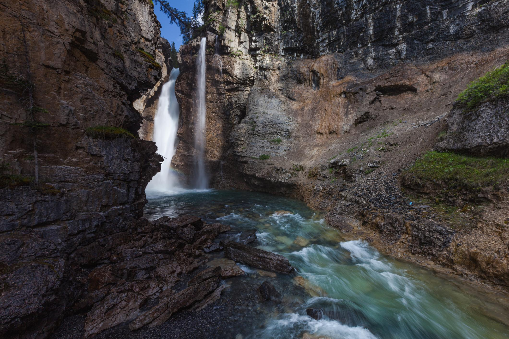

← 존스턴 캐년
🥾 Upper Falls
Johnston Canyon
⭐ 웅장한 폭포를 가장 가까이에서 만나는 대표 코스

📅 우리 일정
Day 2 저녁 (추천)
🏞 기대 풍경
🌊 Upper Falls 대폭포
🪨 깊은 석회암 협곡
🌉 절벽 위 보드워크
💦 시원하게 떨어지는 폭포수
📸 존스턴 캐년 최고의 포토스팟
📏 기본 정보
🚶 걷는 거리
왕복 5.4km
⏱ 걷는 시간
약 2시간
💪 난이도
쉬움
📈 고도차
약 120m
🚻 편의시설
✔ 화장실 (입구)
✔ 주차장
✔ 벤치 일부 구간
✖ 식음료 판매 없음
🎒 준비물
👟 미끄럽지 않은 운동화
💧 물
🧥 가벼운 바람막이
📷 카메라
🍫 간단한 간식
💡 여행 Tip
✔ Upper Falls는 존스턴 캐년의 대표 코스로 가장 많은 사람들이 찾습니다.
✔ 전망대에서는 물보라가 날릴 수 있으니 카메라와 휴대폰을 조심하세요.
✔ Lower Falls보다 사람이 적어 조금 더 여유롭게 풍경을 감상할 수 있습니다.
✔ 시간이 허락한다면 잠시 쉬며 협곡의 물소리를 들어보는 것도 추천합니다.
📍 Google Maps
🥾 트래킹 코스 보기
← 존스턴 캐년